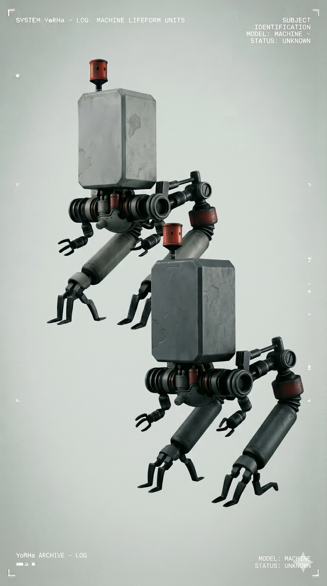
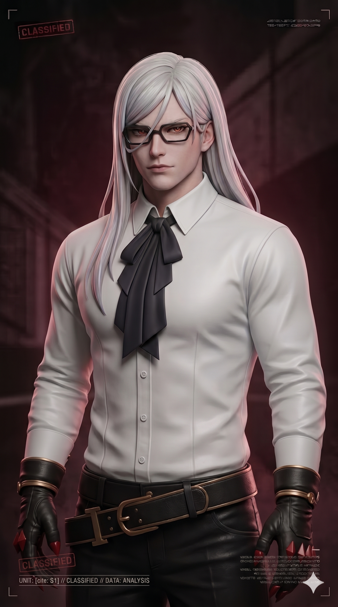
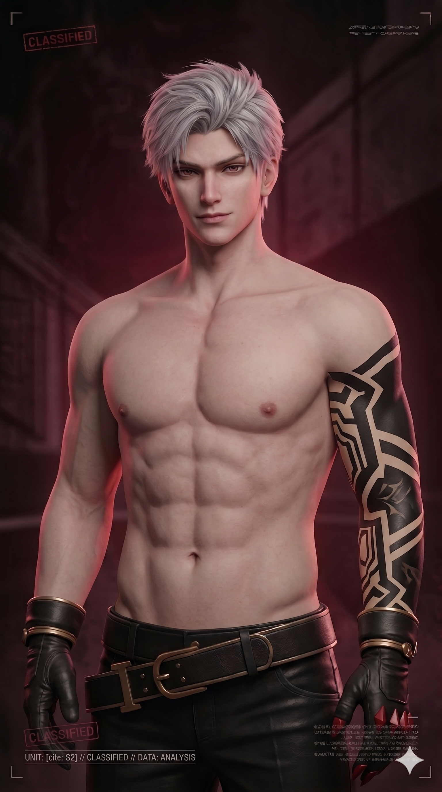

Pods de Soporte Táctico
Unidad de ApoyoDispositivos de soporte táctico utilizados por las unidades YoRHa. Equipados con sistemas de combate, análisis y asistencia avanzada.
- Modelos: Pod 042 / Pod 153
- Función: Soporte de Combate
Registro de unidades YoRHa y entidades relevantes

Dispositivos de soporte táctico utilizados por las unidades YoRHa. Equipados con sistemas de combate, análisis y asistencia avanzada.

Unidad de combate diseñada para operaciones terrestres y eliminación de amenazas mecánicas.
Dispositivos de soporte táctico utilizados por las unidades YoRHa. Equipados con sistemas de combate, análisis y asistencia avanzada.

Unidad especializada en análisis táctico, soporte operativo y hackeo avanzado.

Antigua unidad experimental YoRHa reconocida por su brutal capacidad ofensiva.
Antigua unidad experimental YoRHa reconocida por su brutal capacidad ofensiva.

Entidad mecánica evolucionada obsesionada con el conocimiento, la conciencia y la naturaleza humana.

Unidad vinculada emocionalmente con Adam, caracterizada por su comportamiento agresivo e inestable.
Entidad mecánica evolucionada obsesionada con el conocimiento, la conciencia y la naturaleza humana.